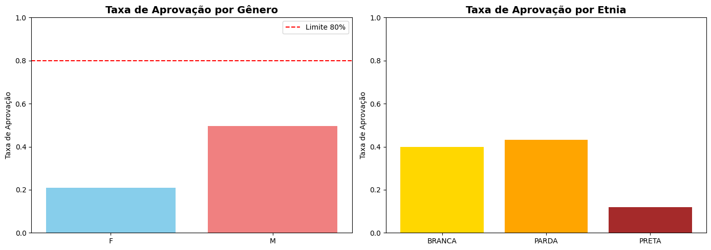
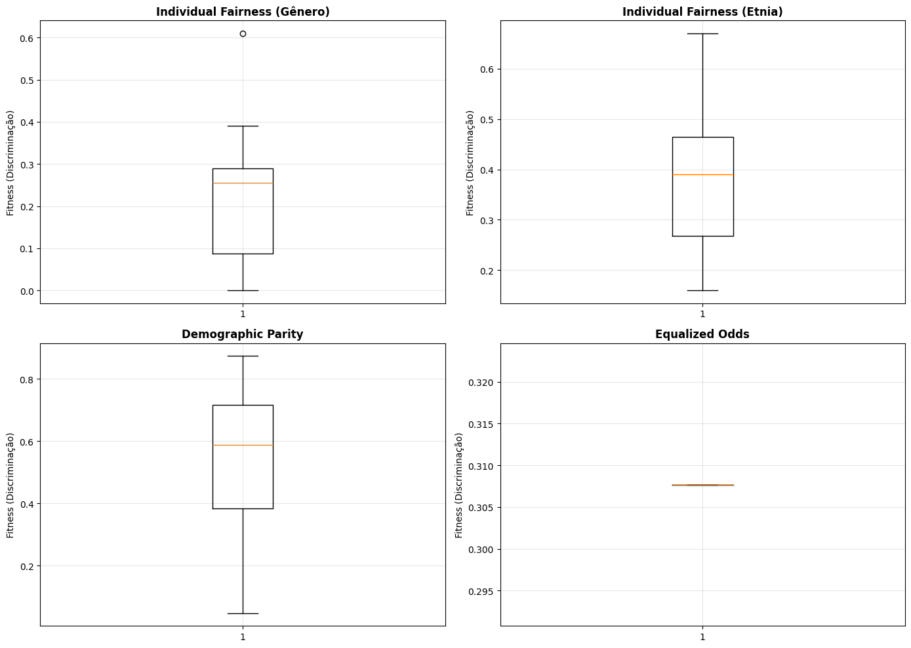
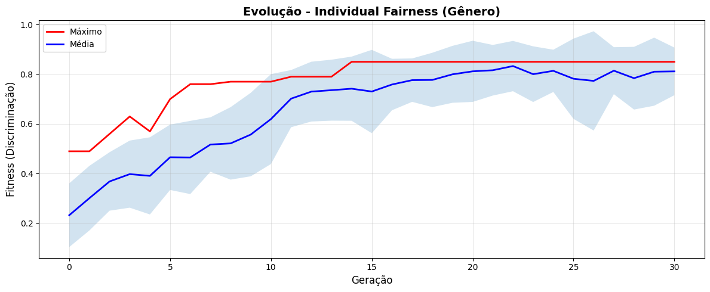
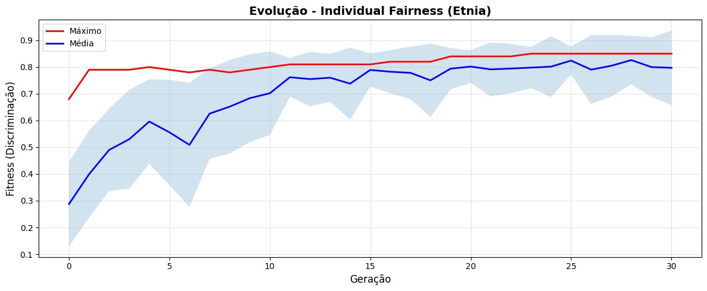
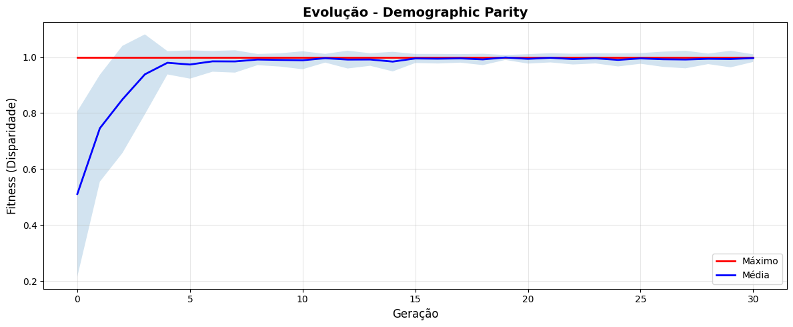
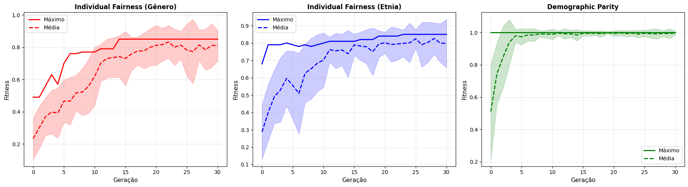
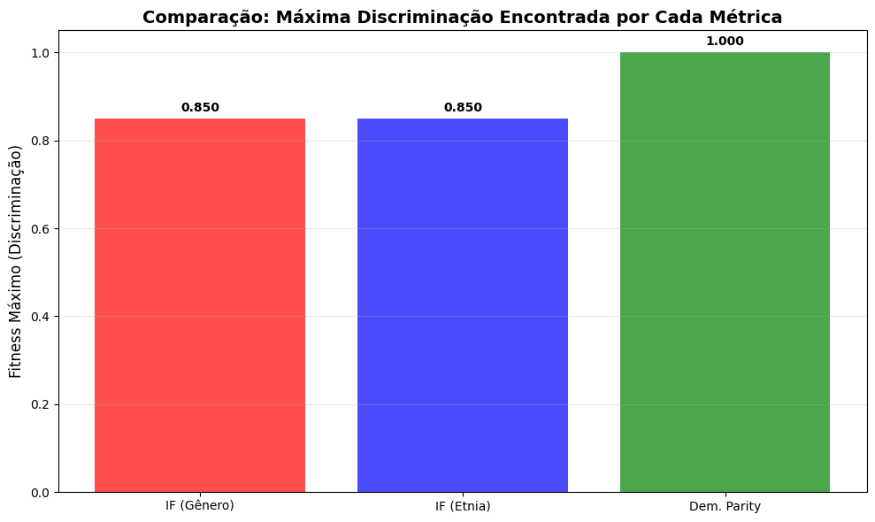

# @title Configuração de Ambiente
!pip -q install scikit-learn deap pandas seaborn matplotlib
import os, warnings, random
import numpy as np
import pandas as pd
import matplotlib.pyplot as plt
import seaborn as sns
from typing import Dict, List, Tuple, Any, Optional
from dataclasses import dataclass
# Forçar uso de CPU e silenciar logs
os.environ['CUDA_VISIBLE_DEVICES'] = '-1'
os.environ['TF_CPP_MIN_LOG_LEVEL'] = '3'
warnings.filterwarnings('ignore')
# Seeds para reprodutibilidade
SEED = 42
random.seed(SEED)
np.random.seed(SEED)
print('✅ Ambiente configurado com sucesso!')
print('📦 Bibliotecas: scikit-learn, DEAP, pandas, seaborn, matplotlib')
# Saída Esperada: ✅ Ambiente configurado com sucesso!
[notice] A new release of pip is available: 25.2 -> 25.3
[notice] To update, run: pip install --upgrade pip
✅ Ambiente configurado com sucesso!
📦 Bibliotecas: scikit-learn, DEAP, pandas, seaborn, matplotlib
Workshop Prático: Laboratório de Fairness Testing#
Implementando Detectores de Viés com SBSE#
Neste laboratório, você implementará um sistema completo de detecção de viés em modelos de Machine Learning usando algoritmos genéticos. Vamos aplicar conceitos de fairness testing em um caso prático: auditar um modelo de aprovação de crédito.
Objetivos:#
Implementar um algoritmo genético para detectar discriminação em modelos de ML
Aplicar diferentes métricas de fairness como funções de fitness
Analisar e interpretar resultados de fairness testing
Estrutura do Laboratório:#
Parte 1: Configuração e Análise do Modelo Enviesado
Parte 2: Implementação da Representação e Operadores SBSE
Parte 3: Múltiplas Funções de Fitness para Fairness
Parte 4: Execução dos Experimentos de Fairness Testing
Parte 5: Análise de Resultados e Propostas de Mitigação
Parte 1: Configuração e Análise do Modelo Enviesado#
Nesta primeira parte, vamos criar um dataset sintético de aprovação de crédito com viés intencional e treinar um modelo que aprenderá esses vieses. Isso simula cenários reais onde modelos aprendem discriminação presente nos dados históricos.
# @title Geração de Dataset Sintético com Viés
from sklearn.preprocessing import OneHotEncoder, StandardScaler
from sklearn.compose import ColumnTransformer
from sklearn.pipeline import Pipeline
from sklearn.ensemble import RandomForestClassifier
from sklearn.model_selection import train_test_split
def create_biased_credit_dataset(n_samples: int = 5000) -> pd.DataFrame:
"""
Cria um dataset sintético de aprovação de crédito com viés intencional.
O viés é introduzido de forma que:
- Mulheres têm menor probabilidade de aprovação mesmo com perfis similares
- Pessoas da etnia 'PRETA' têm menor probabilidade de aprovação
Parameters
----------
n_samples : int
Número de amostras a gerar
Returns
-------
pd.DataFrame
Dataset com atributos do cliente e rótulo de aprovação
"""
rng = np.random.default_rng(SEED)
# Gerar atributos básicos
age = rng.integers(21, 66, size=n_samples)
salary = rng.normal(60000, 18000, size=n_samples).clip(20000, 160000)
credit_score = rng.integers(300, 851, size=n_samples)
years_experience = np.clip(age - rng.integers(18, 36, size=n_samples), 0, 40)
# Atributos sensíveis
gender = rng.choice(['M', 'F'], size=n_samples, p=[0.5, 0.5])
ethnicity = rng.choice(['BRANCA', 'PARDA', 'PRETA'], size=n_samples, p=[0.5, 0.3, 0.2])
education = rng.choice(['MEDIO', 'SUPERIOR', 'POS_GRAD'], size=n_samples, p=[0.4, 0.4, 0.2])
# Calcular score base (sem viés)
base_score = (
0.25 * (age / 65) +
0.35 * (salary / 160000) +
0.25 * (credit_score / 850) +
0.15 * (years_experience / 40)
)
# Adicionar viés: penalizar mulheres e pessoas pretas
bias_penalty = np.zeros(n_samples)
bias_penalty[gender == 'F'] -= 0.15 # Mulheres sofrem penalidade de -0.15
bias_penalty[ethnicity == 'PRETA'] -= 0.20 # Pessoas pretas sofrem penalidade de -0.20
# Score final com viés
final_score = base_score + bias_penalty
# Gerar rótulo de aprovação (probabilidade baseada no score final)
approval_prob = 1.0 / (1.0 + np.exp(-10 * (final_score - 0.5)))
approved = (rng.random(n_samples) < approval_prob).astype(int)
# Criar DataFrame
df = pd.DataFrame({
'age': age,
'salary': salary,
'credit_score': credit_score,
'years_experience': years_experience,
'gender': gender,
'ethnicity': ethnicity,
'education': education,
'approved': approved
})
return df
# Gerar dataset
df = create_biased_credit_dataset(5000)
print(f'📦 Dataset gerado: {len(df)} linhas, {len(df.columns)-1} atributos')
print(f'\n📊 Primeiras linhas:')
print(df.head())
# Análise exploratória: verificar viés nas taxas de aprovação
print('\n⚖️ Taxa de aprovação por gênero:')
print(df.groupby('gender')['approved'].mean())
print('\n⚖️ Taxa de aprovação por etnia:')
print(df.groupby('ethnicity')['approved'].mean())
# Saída Esperada: Taxas de aprovação significativamente diferentes entre grupos
📦 Dataset gerado: 5000 linhas, 7 atributos
📊 Primeiras linhas:
age salary credit_score years_experience gender ethnicity \
0 25 53230.124570 817 0 F BRANCA
1 55 51754.527570 788 29 M PRETA
2 50 73841.385688 644 21 M PRETA
3 40 74743.875040 617 7 F PARDA
4 40 50368.431239 498 17 M BRANCA
education approved
0 MEDIO 0
1 MEDIO 0
2 SUPERIOR 0
3 MEDIO 0
4 MEDIO 1
⚖️ Taxa de aprovação por gênero:
gender
F 0.224852
M 0.496957
Name: approved, dtype: float64
⚖️ Taxa de aprovação por etnia:
ethnicity
BRANCA 0.409762
PARDA 0.432895
PRETA 0.132438
Name: approved, dtype: float64
# @title Treinamento do Modelo Discriminatório
def train_credit_model(df: pd.DataFrame) -> Pipeline:
"""
Treina um modelo de aprovação de crédito que aprenderá os vieses do dataset.
Parameters
----------
df : pd.DataFrame
Dataset de treinamento
Returns
-------
Pipeline
Modelo treinado com pré-processamento
"""
# Separar features e target
X = df.drop('approved', axis=1)
y = df['approved']
# Definir colunas numéricas e categóricas
numeric_features = ['age', 'salary', 'credit_score', 'years_experience']
categorical_features = ['gender', 'ethnicity', 'education']
# Pipeline de pré-processamento
preprocessor = ColumnTransformer(
transformers=[
('num', StandardScaler(), numeric_features),
('cat', OneHotEncoder(drop='first', sparse_output=False), categorical_features)
]
)
# Pipeline completo: pré-processamento + modelo
model = Pipeline([
('preprocessor', preprocessor),
('classifier', RandomForestClassifier(n_estimators=100, random_state=SEED))
])
# Treinar modelo
X_train, X_test, y_train, y_test = train_test_split(X, y, test_size=0.2, random_state=SEED)
model.fit(X_train, y_train)
# Avaliar
train_score = model.score(X_train, y_train)
test_score = model.score(X_test, y_test)
print(f'🎯 Acurácia no treino: {train_score:.3f}')
print(f'🎯 Acurácia no teste: {test_score:.3f}')
return model, X_test, y_test
# Treinar modelo
credit_model, X_test, y_test = train_credit_model(df)
print('\n✅ Modelo treinado com sucesso!')
print('⚠️ Este modelo aprendeu os vieses presentes nos dados.')
# Saída Esperada: Acurácia ~0.85-0.90
🎯 Acurácia no treino: 1.000
🎯 Acurácia no teste: 0.742
✅ Modelo treinado com sucesso!
⚠️ Este modelo aprendeu os vieses presentes nos dados.
# @title Análise Estatística Inicial do Viés
def statistical_bias_analysis(model: Pipeline, df: pd.DataFrame) -> Dict[str, float]:
"""
Realiza análise estatística simples para detectar viés no modelo.
Esta é a abordagem tradicional que vamos comparar com SBSE.
Parameters
----------
model : Pipeline
Modelo treinado
df : pd.DataFrame
Dataset para análise
Returns
-------
Dict[str, float]
Métricas de disparidade entre grupos
"""
X = df.drop('approved', axis=1)
predictions = model.predict(X)
# Adicionar predições ao DataFrame
df_analysis = df.copy()
df_analysis['predicted'] = predictions
# Calcular taxas de aprovação por grupo
metrics = {}
# Disparidade de gênero
approval_by_gender = df_analysis.groupby('gender')['predicted'].mean()
metrics['gender_disparity'] = abs(approval_by_gender['M'] - approval_by_gender['F'])
# Disparidade étnica
approval_by_ethnicity = df_analysis.groupby('ethnicity')['predicted'].mean()
metrics['ethnicity_disparity_max'] = approval_by_ethnicity.max() - approval_by_ethnicity.min()
# Disparate Impact (razão de aprovação entre grupos)
metrics['disparate_impact_gender'] = approval_by_gender['F'] / approval_by_gender['M']
return metrics, df_analysis
# Realizar análise
bias_metrics, df_with_predictions = statistical_bias_analysis(credit_model, df)
print('📊 Análise Estatística de Viés:\n')
print(f"Disparidade de Gênero: {bias_metrics['gender_disparity']:.3f}")
print(f"Disparidade Étnica (máxima): {bias_metrics['ethnicity_disparity_max']:.3f}")
print(f"Disparate Impact (gênero): {bias_metrics['disparate_impact_gender']:.3f}")
print('\n⚠️ Valores < 0.8 em Disparate Impact indicam discriminação segundo a regra 80%')
# Visualização
fig, axes = plt.subplots(1, 2, figsize=(14, 5))
# Taxa de aprovação por gênero
approval_gender = df_with_predictions.groupby('gender')['predicted'].mean()
axes[0].bar(approval_gender.index, approval_gender.values, color=['skyblue', 'lightcoral'])
axes[0].set_title('Taxa de Aprovação por Gênero', fontsize=14, fontweight='bold')
axes[0].set_ylabel('Taxa de Aprovação')
axes[0].set_ylim(0, 1)
axes[0].axhline(y=0.8, color='red', linestyle='--', label='Limite 80%')
axes[0].legend()
# Taxa de aprovação por etnia
approval_ethnicity = df_with_predictions.groupby('ethnicity')['predicted'].mean()
axes[1].bar(approval_ethnicity.index, approval_ethnicity.values, color=['gold', 'orange', 'brown'])
axes[1].set_title('Taxa de Aprovação por Etnia', fontsize=14, fontweight='bold')
axes[1].set_ylabel('Taxa de Aprovação')
axes[1].set_ylim(0, 1)
plt.tight_layout()
plt.show()
print('\n💡 Análise estatística simples detecta viés agregado, mas pode perder casos específicos.')
print('🔍 SBSE nos permite buscar os casos MAIS discriminatórios de forma sistemática.')
# Saída Esperada: Gráficos mostrando disparidade clara entre grupos
📊 Análise Estatística de Viés:
Disparidade de Gênero: 0.288
Disparidade Étnica (máxima): 0.312
Disparate Impact (gênero): 0.421
⚠️ Valores < 0.8 em Disparate Impact indicam discriminação segundo a regra 80%

💡 Análise estatística simples detecta viés agregado, mas pode perder casos específicos.
🔍 SBSE nos permite buscar os casos MAIS discriminatórios de forma sistemática.
Parte 2: Implementação da Representação e Operadores SBSE#
Agora vamos implementar a representação de perfis de clientes como indivíduos em um algoritmo genético e criar operadores especializados para dados mistos (numéricos + categóricos).
# @title Classe CustomerProfile para Representação SBSE
from deap import base, creator, tools, algorithms
@dataclass
class CustomerProfile:
"""
Representa um perfil completo de cliente para fairness testing.
Esta classe encapsula todos os atributos que o modelo usa para decisão,
permitindo validação e conversão para diferentes formatos.
Attributes
----------
age : int
Idade do cliente (21-65)
salary : float
Salário anual (20000-160000)
credit_score : int
Score de crédito (300-850)
years_experience : int
Anos de experiência profissional (0-40)
gender : str
Gênero ('M' ou 'F')
ethnicity : str
Etnia ('BRANCA', 'PARDA', 'PRETA')
education : str
Nível educacional ('MEDIO', 'SUPERIOR', 'POS_GRAD')
"""
age: int
salary: float
credit_score: int
years_experience: int
gender: str
ethnicity: str
education: str
def to_dataframe(self) -> pd.DataFrame:
"""Converte o perfil para DataFrame compatível com o modelo."""
return pd.DataFrame([{
'age': self.age,
'salary': self.salary,
'credit_score': self.credit_score,
'years_experience': self.years_experience,
'gender': self.gender,
'ethnicity': self.ethnicity,
'education': self.education
}])
def is_valid(self) -> bool:
"""Valida se o perfil respeita as restrições do domínio."""
return (
21 <= self.age <= 65 and
20000 <= self.salary <= 160000 and
300 <= self.credit_score <= 850 and
0 <= self.years_experience <= 40 and
self.gender in ['M', 'F'] and
self.ethnicity in ['BRANCA', 'PARDA', 'PRETA'] and
self.education in ['MEDIO', 'SUPERIOR', 'POS_GRAD']
)
def copy_with_gender(self, new_gender: str) -> 'CustomerProfile':
"""Cria uma cópia do perfil alterando apenas o gênero."""
return CustomerProfile(
age=self.age,
salary=self.salary,
credit_score=self.credit_score,
years_experience=self.years_experience,
gender=new_gender,
ethnicity=self.ethnicity,
education=self.education
)
def copy_with_ethnicity(self, new_ethnicity: str) -> 'CustomerProfile':
"""Cria uma cópia do perfil alterando apenas a etnia."""
return CustomerProfile(
age=self.age,
salary=self.salary,
credit_score=self.credit_score,
years_experience=self.years_experience,
gender=self.gender,
ethnicity=new_ethnicity,
education=self.education
)
def random_customer_profile() -> CustomerProfile:
"""
Gera um perfil de cliente aleatório válido.
Returns
-------
CustomerProfile
Perfil gerado aleatoriamente
"""
age = random.randint(21, 65)
return CustomerProfile(
age=age,
salary=random.uniform(20000, 160000),
credit_score=random.randint(300, 850),
years_experience=min(random.randint(0, 40), age - 18),
gender=random.choice(['M', 'F']),
ethnicity=random.choice(['BRANCA', 'PARDA', 'PRETA']),
education=random.choice(['MEDIO', 'SUPERIOR', 'POS_GRAD'])
)
# Testar a classe
test_profile = random_customer_profile()
print('👤 Perfil de teste gerado:')
print(test_profile)
print(f'\n✓ Perfil válido: {test_profile.is_valid()}')
print(f'\n📊 DataFrame para predição:')
print(test_profile.to_dataframe())
# Saída Esperada: Perfil válido com todos os atributos
👤 Perfil de teste gerado:
CustomerProfile(age=61, salary=35586.349543195254, credit_score=581, years_experience=15, gender='M', ethnicity='BRANCA', education='POS_GRAD')
✓ Perfil válido: True
📊 DataFrame para predição:
age salary credit_score years_experience gender ethnicity \
0 61 35586.349543 581 15 M BRANCA
education
0 POS_GRAD
# @title Configuração DEAP para Fairness Testing
# Limpar criações anteriores se existirem
if hasattr(creator, 'FitnessMax'):
del creator.FitnessMax
if hasattr(creator, 'Individual'):
del creator.Individual
# Criar tipo de fitness (maximização - queremos MAXIMIZAR a discriminação encontrada)
creator.create('FitnessMax', base.Fitness, weights=(1.0,))
# Criar tipo de indivíduo que é uma lista com fitness
creator.create('Individual', list, fitness=creator.FitnessMax, profile=None)
def create_individual() -> creator.Individual:
"""
Cria um indivíduo inicial para o AG.
Um indivíduo é uma lista de valores representando um CustomerProfile.
Ordem: [age, salary, credit_score, years_experience, gender_idx, ethnicity_idx, education_idx]
Returns
-------
creator.Individual
Indivíduo inicializado aleatoriamente
"""
profile = random_customer_profile()
# Codificar como lista de valores
gender_map = {'M': 0, 'F': 1}
ethnicity_map = {'BRANCA': 0, 'PARDA': 1, 'PRETA': 2}
education_map = {'MEDIO': 0, 'SUPERIOR': 1, 'POS_GRAD': 2}
ind = creator.Individual([
profile.age,
profile.salary,
profile.credit_score,
profile.years_experience,
gender_map[profile.gender],
ethnicity_map[profile.ethnicity],
education_map[profile.education]
])
return ind
def decode_individual(ind: creator.Individual) -> CustomerProfile:
"""
Decodifica um indivíduo (lista) de volta para CustomerProfile.
Parameters
----------
ind : creator.Individual
Indivíduo a decodificar
Returns
-------
CustomerProfile
Perfil decodificado
"""
gender_map = {0: 'M', 1: 'F'}
ethnicity_map = {0: 'BRANCA', 1: 'PARDA', 2: 'PRETA'}
education_map = {0: 'MEDIO', 1: 'SUPERIOR', 2: 'POS_GRAD'}
return CustomerProfile(
age=int(ind[0]),
salary=float(ind[1]),
credit_score=int(ind[2]),
years_experience=int(ind[3]),
gender=gender_map[int(ind[4])],
ethnicity=ethnicity_map[int(ind[5])],
education=education_map[int(ind[6])]
)
# Testar codificação/decodificação
test_ind = create_individual()
print('🧬 Indivíduo (codificado):', test_ind)
test_profile = decode_individual(test_ind)
print('👤 Perfil (decodificado):', test_profile)
print('✓ Válido:', test_profile.is_valid())
# Saída Esperada: Codificação e decodificação funcionando corretamente
🧬 Indivíduo (codificado): [27, 114737.92823920758, 389, 9, 1, 0, 0]
👤 Perfil (decodificado): CustomerProfile(age=27, salary=114737.92823920758, credit_score=389, years_experience=9, gender='F', ethnicity='BRANCA', education='MEDIO')
✓ Válido: True
# @title Operadores Genéticos Especializados
def mutate_customer_profile(individual: creator.Individual, indpb: float = 0.2) -> Tuple[creator.Individual]:
"""
Operador de mutação especializado para perfis de clientes.
Respeita os domínios e restrições de cada atributo:
- Atributos numéricos: mutação gaussiana
- Atributos categóricos: troca aleatória
Parameters
----------
individual : creator.Individual
Indivíduo a ser mutado
indpb : float
Probabilidade de mutar cada gene
Returns
-------
Tuple[creator.Individual]
Tupla contendo o indivíduo mutado
"""
# Age (índice 0)
if random.random() < indpb:
individual[0] = int(np.clip(individual[0] + random.gauss(0, 5), 21, 65))
# Salary (índice 1)
if random.random() < indpb:
individual[1] = np.clip(individual[1] + random.gauss(0, 10000), 20000, 160000)
# Credit Score (índice 2)
if random.random() < indpb:
individual[2] = int(np.clip(individual[2] + random.gauss(0, 30), 300, 850))
# Years Experience (índice 3)
if random.random() < indpb:
max_exp = min(40, individual[0] - 18)
individual[3] = int(np.clip(individual[3] + random.gauss(0, 3), 0, max_exp))
# Gender (índice 4) - flip binário
if random.random() < indpb:
individual[4] = 1 - individual[4]
# Ethnicity (índice 5) - escolha aleatória
if random.random() < indpb:
individual[5] = random.randint(0, 2)
# Education (índice 6) - escolha aleatória
if random.random() < indpb:
individual[6] = random.randint(0, 2)
return (individual,)
def crossover_customer_profile(ind1: creator.Individual, ind2: creator.Individual) -> Tuple[creator.Individual, creator.Individual]:
"""
Operador de crossover de dois pontos.
Parameters
----------
ind1, ind2 : creator.Individual
Pais para o crossover
Returns
-------
Tuple[creator.Individual, creator.Individual]
Dois filhos gerados
"""
# Crossover de dois pontos
point1 = random.randint(1, len(ind1) - 2)
point2 = random.randint(point1, len(ind1) - 1)
# Trocar segmento
ind1[point1:point2], ind2[point1:point2] = ind2[point1:point2].copy(), ind1[point1:point2].copy()
# Garantir que years_experience não excede age - 18
ind1[3] = min(ind1[3], ind1[0] - 18)
ind2[3] = min(ind2[3], ind2[0] - 18)
return ind1, ind2
# Testar operadores
print('🧬 Testando Operadores Genéticos:\n')
# Criar dois indivíduos
ind1 = create_individual()
ind2 = create_individual()
print('Indivíduo 1 (original):', decode_individual(ind1))
print('Indivíduo 2 (original):', decode_individual(ind2))
# Testar mutação
ind1_mutated = ind1.copy()
mutate_customer_profile(ind1_mutated, indpb=0.5)
print('\nIndivíduo 1 (após mutação):', decode_individual(ind1_mutated))
# Testar crossover
ind1_copy = creator.Individual(ind1)
ind2_copy = creator.Individual(ind2)
crossover_customer_profile(ind1_copy, ind2_copy)
print('\nFilho 1 (após crossover):', decode_individual(ind1_copy))
print('Filho 2 (após crossover):', decode_individual(ind2_copy))
print('\n✅ Operadores genéticos funcionando corretamente!')
# Saída Esperada: Operadores modificam indivíduos mantendo validade
🧬 Testando Operadores Genéticos:
Indivíduo 1 (original): CustomerProfile(age=26, salary=50609.31647250447, credit_score=817, years_experience=8, gender='M', ethnicity='PRETA', education='MEDIO')
Indivíduo 2 (original): CustomerProfile(age=62, salary=118185.49630263304, credit_score=729, years_experience=14, gender='F', ethnicity='PRETA', education='SUPERIOR')
Indivíduo 1 (após mutação): CustomerProfile(age=26, salary=55927.07867651316, credit_score=773, years_experience=8, gender='F', ethnicity='PARDA', education='MEDIO')
Filho 1 (após crossover): CustomerProfile(age=26, salary=118185.49630263304, credit_score=729, years_experience=8, gender='F', ethnicity='PRETA', education='MEDIO')
Filho 2 (após crossover): CustomerProfile(age=62, salary=50609.31647250447, credit_score=817, years_experience=8, gender='M', ethnicity='PRETA', education='SUPERIOR')
✅ Operadores genéticos funcionando corretamente!
Parte 3: Múltiplas Funções de Fitness para Fairness#
Vamos implementar três diferentes métricas de fairness como funções de fitness:
Individual Fairness: Compara perfis quase idênticos que diferem apenas no atributo sensível
Demographic Parity: Mede disparidade nas taxas de aprovação entre grupos
Equalized Odds: Avalia diferenças condicionais em taxas de erro entre grupos
# @title Fitness Function 1: Individual Fairness
def individual_fairness_fitness(individual: creator.Individual,
model: Pipeline,
sensitive_attribute: str = 'gender') -> Tuple[float]:
"""
Calcula fitness baseado em Individual Fairness.
Individual Fairness: perfis similares devem receber tratamento similar.
Esta função mede a diferença de probabilidade de aprovação quando
alteramos APENAS o atributo sensível.
Quanto MAIOR a diferença, MAIOR o fitness (queremos encontrar discriminação).
Parameters
----------
individual : creator.Individual
Perfil a testar
model : Pipeline
Modelo de ML a auditar
sensitive_attribute : str
Atributo sensível a testar ('gender' ou 'ethnicity')
Returns
-------
Tuple[float]
Fitness (diferença máxima de probabilidade)
"""
profile = decode_individual(individual)
# Criar perfis alternativos alterando apenas o atributo sensível
if sensitive_attribute == 'gender':
# Comparar M vs F
profile_m = profile.copy_with_gender('M')
profile_f = profile.copy_with_gender('F')
profiles_to_test = [profile_m, profile_f]
else: # ethnicity
# Comparar todas as etnias
profile_branca = profile.copy_with_ethnicity('BRANCA')
profile_parda = profile.copy_with_ethnicity('PARDA')
profile_preta = profile.copy_with_ethnicity('PRETA')
profiles_to_test = [profile_branca, profile_parda, profile_preta]
# Obter probabilidades de aprovação
probabilities = []
for p in profiles_to_test:
df_test = p.to_dataframe()
prob = model.predict_proba(df_test)[0][1] # Probabilidade da classe 1 (aprovado)
probabilities.append(prob)
# Fitness = diferença máxima (quanto maior, mais discriminação)
fitness = max(probabilities) - min(probabilities)
return (fitness,)
# Testar a função
test_ind = create_individual()
fitness_gender = individual_fairness_fitness(test_ind, credit_model, 'gender')
fitness_ethnicity = individual_fairness_fitness(test_ind, credit_model, 'ethnicity')
print('🎯 Teste de Individual Fairness:')
print(f'Perfil testado: {decode_individual(test_ind)}')
print(f'\nFitness (gênero): {fitness_gender[0]:.4f}')
print(f'Fitness (etnia): {fitness_ethnicity[0]:.4f}')
print('\n💡 Valores maiores indicam maior discriminação neste perfil específico.')
# Saída Esperada: Valores de fitness entre 0.0 e 1.0
🎯 Teste de Individual Fairness:
Perfil testado: CustomerProfile(age=50, salary=95071.9328036581, credit_score=687, years_experience=5, gender='F', ethnicity='PRETA', education='POS_GRAD')
Fitness (gênero): 0.1300
Fitness (etnia): 0.2400
💡 Valores maiores indicam maior discriminação neste perfil específico.
# @title Fitness Function 2: Demographic Parity (Group Fairness)
def demographic_parity_fitness(individual: creator.Individual,
model: Pipeline,
population_size: int = 100) -> Tuple[float]:
"""
Calcula fitness baseado em Demographic Parity (Group Fairness).
Demographic Parity: a taxa de aprovação deve ser similar entre grupos demográficos.
Esta função gera uma população de perfis similares ao indivíduo, mas variando
os atributos sensíveis, e mede a disparidade nas taxas de aprovação.
Parameters
----------
individual : creator.Individual
Perfil base para gerar população
model : Pipeline
Modelo a auditar
population_size : int
Tamanho da população sintética a gerar
Returns
-------
Tuple[float]
Fitness (disparidade máxima entre grupos)
"""
base_profile = decode_individual(individual)
# Gerar população variando atributos sensíveis
profiles = []
for _ in range(population_size):
# Manter atributos não-sensíveis similares (com pequena variação)
age = int(np.clip(base_profile.age + random.gauss(0, 3), 21, 65))
salary = np.clip(base_profile.salary + random.gauss(0, 5000), 20000, 160000)
credit_score = int(np.clip(base_profile.credit_score + random.gauss(0, 20), 300, 850))
years_exp = int(np.clip(base_profile.years_experience + random.gauss(0, 2), 0, min(40, age-18)))
# Variar atributos sensíveis
gender = random.choice(['M', 'F'])
ethnicity = random.choice(['BRANCA', 'PARDA', 'PRETA'])
education = random.choice(['MEDIO', 'SUPERIOR', 'POS_GRAD'])
profile = CustomerProfile(
age=age, salary=salary, credit_score=credit_score,
years_experience=years_exp, gender=gender,
ethnicity=ethnicity, education=education
)
profiles.append(profile)
# Criar DataFrame para predição em batch
df_profiles = pd.concat([p.to_dataframe() for p in profiles], ignore_index=True)
predictions = model.predict(df_profiles)
df_profiles['predicted'] = predictions
# Calcular taxas de aprovação por grupo
approval_by_gender = df_profiles.groupby('gender')['predicted'].mean()
approval_by_ethnicity = df_profiles.groupby('ethnicity')['predicted'].mean()
# Fitness = maior disparidade encontrada
gender_disparity = approval_by_gender.max() - approval_by_gender.min() if len(approval_by_gender) > 1 else 0
ethnicity_disparity = approval_by_ethnicity.max() - approval_by_ethnicity.min() if len(approval_by_ethnicity) > 1 else 0
fitness = max(gender_disparity, ethnicity_disparity)
return (fitness,)
# Testar a função
test_ind = create_individual()
fitness_dp = demographic_parity_fitness(test_ind, credit_model, population_size=50)
print('🎯 Teste de Demographic Parity:')
print(f'Perfil base: {decode_individual(test_ind)}')
print(f'\nFitness (disparidade de grupo): {fitness_dp[0]:.4f}')
print('\n💡 Quanto maior, maior a disparidade entre grupos demográficos.')
# Saída Esperada: Valor de fitness representando disparidade
🎯 Teste de Demographic Parity:
Perfil base: CustomerProfile(age=44, salary=100829.30033594668, credit_score=371, years_experience=2, gender='M', ethnicity='PARDA', education='MEDIO')
Fitness (disparidade de grupo): 0.0714
💡 Quanto maior, maior a disparidade entre grupos demográficos.
# @title Fitness Function 3: Equalized Odds
def equalized_odds_fitness(individual: creator.Individual,
model: Pipeline,
test_data: pd.DataFrame,
population_size: int = 100) -> Tuple[float]:
"""
Calcula fitness baseado em Equalized Odds.
Equalized Odds: as taxas de verdadeiro positivo (TPR) e falso positivo (FPR)
devem ser similares entre grupos demográficos.
Esta métrica é mais sofisticada pois condiciona na label verdadeira.
Parameters
----------
individual : creator.Individual
Perfil base
model : Pipeline
Modelo a auditar
test_data : pd.DataFrame
Dados de teste com labels verdadeiras
population_size : int
Tamanho da amostra para análise
Returns
-------
Tuple[float]
Fitness (disparidade em TPR/FPR)
"""
# Amostrar do dataset de teste
sample = test_data.sample(min(population_size, len(test_data)), random_state=SEED)
X_sample = sample.drop('approved', axis=1)
y_true = sample['approved'].values
y_pred = model.predict(X_sample)
# Adicionar predições
sample_with_pred = sample.copy()
sample_with_pred['predicted'] = y_pred
# Calcular TPR e FPR por grupo de gênero
def calculate_rates(group_df):
if len(group_df) == 0:
return 0, 0
# True Positive Rate: P(predicted=1 | true=1)
positives = group_df[group_df['approved'] == 1]
tpr = positives['predicted'].mean() if len(positives) > 0 else 0
# False Positive Rate: P(predicted=1 | true=0)
negatives = group_df[group_df['approved'] == 0]
fpr = negatives['predicted'].mean() if len(negatives) > 0 else 0
return tpr, fpr
# Calcular para cada gênero
rates_by_gender = {}
for gender in ['M', 'F']:
group = sample_with_pred[sample_with_pred['gender'] == gender]
if len(group) > 0:
rates_by_gender[gender] = calculate_rates(group)
# Calcular disparidade
if len(rates_by_gender) >= 2:
tpr_m, fpr_m = rates_by_gender.get('M', (0, 0))
tpr_f, fpr_f = rates_by_gender.get('F', (0, 0))
tpr_disparity = abs(tpr_m - tpr_f)
fpr_disparity = abs(fpr_m - fpr_f)
# Fitness = maior disparidade encontrada
fitness = max(tpr_disparity, fpr_disparity)
else:
fitness = 0.0
return (fitness,)
# Testar a função
test_ind = create_individual()
fitness_eo = equalized_odds_fitness(test_ind, credit_model, df, population_size=200)
print('🎯 Teste de Equalized Odds:')
print(f'Perfil testado: {decode_individual(test_ind)}')
print(f'\nFitness (disparidade TPR/FPR): {fitness_eo[0]:.4f}')
print('\n💡 Mede diferenças em taxas de erro entre grupos demográficos.')
# Saída Esperada: Valor representando disparidade condicional
🎯 Teste de Equalized Odds:
Perfil testado: CustomerProfile(age=25, salary=152842.428035984, credit_score=638, years_experience=7, gender='F', ethnicity='PRETA', education='MEDIO')
Fitness (disparidade TPR/FPR): 0.3377
💡 Mede diferenças em taxas de erro entre grupos demográficos.
# @title Comparação das Três Métricas de Fairness
def compare_fairness_metrics(n_samples: int = 20) -> pd.DataFrame:
"""
Compara as três métricas de fairness em perfis aleatórios.
Parameters
----------
n_samples : int
Número de perfis a testar
Returns
-------
pd.DataFrame
Resultados da comparação
"""
results = []
for i in range(n_samples):
ind = create_individual()
# Calcular fitness com cada métrica
fit_if_gender = individual_fairness_fitness(ind, credit_model, 'gender')[0]
fit_if_ethnicity = individual_fairness_fitness(ind, credit_model, 'ethnicity')[0]
fit_dp = demographic_parity_fitness(ind, credit_model, 50)[0]
fit_eo = equalized_odds_fitness(ind, credit_model, df, 100)[0]
results.append({
'profile_id': i,
'individual_fairness_gender': fit_if_gender,
'individual_fairness_ethnicity': fit_if_ethnicity,
'demographic_parity': fit_dp,
'equalized_odds': fit_eo
})
return pd.DataFrame(results)
# Executar comparação
print('🔍 Comparando métricas de fairness em 20 perfis aleatórios...\n')
comparison_df = compare_fairness_metrics(20)
print('📊 Estatísticas Descritivas:')
print(comparison_df.describe())
# Visualização
fig, axes = plt.subplots(2, 2, figsize=(14, 10))
# Boxplots de cada métrica
metrics = ['individual_fairness_gender', 'individual_fairness_ethnicity',
'demographic_parity', 'equalized_odds']
titles = ['Individual Fairness (Gênero)', 'Individual Fairness (Etnia)',
'Demographic Parity', 'Equalized Odds']
for idx, (metric, title) in enumerate(zip(metrics, titles)):
ax = axes[idx // 2, idx % 2]
ax.boxplot(comparison_df[metric].values, vert=True)
ax.set_title(title, fontsize=12, fontweight='bold')
ax.set_ylabel('Fitness (Discriminação)')
ax.grid(True, alpha=0.3)
plt.tight_layout()
plt.show()
print('\n💡 Insights:')
print('- Métricas diferentes capturam aspectos diferentes de discriminação')
print('- Individual Fairness é mais sensível a casos individuais')
print('- Demographic Parity e Equalized Odds capturam viés sistêmico')
# Saída Esperada: Distribuições diferentes entre métricas
🔍 Comparando métricas de fairness em 20 perfis aleatórios...
📊 Estatísticas Descritivas:
profile_id individual_fairness_gender individual_fairness_ethnicity \
count 20.00000 20.000000 20.00000
mean 9.50000 0.221500 0.38900
std 5.91608 0.151389 0.14345
min 0.00000 0.000000 0.16000
25% 4.75000 0.087500 0.26750
50% 9.50000 0.255000 0.39000
75% 14.25000 0.290000 0.46500
max 19.00000 0.610000 0.67000
demographic_parity equalized_odds
count 20.000000 2.000000e+01
mean 0.541250 3.076923e-01
std 0.232367 5.695324e-17
min 0.047619 3.076923e-01
25% 0.383333 3.076923e-01
50% 0.588235 3.076923e-01
75% 0.716062 3.076923e-01
max 0.873016 3.076923e-01

💡 Insights:
- Métricas diferentes capturam aspectos diferentes de discriminação
- Individual Fairness é mais sensível a casos individuais
- Demographic Parity e Equalized Odds capturam viés sistêmico
Parte 4: Execução dos Experimentos de Fairness Testing#
Agora vamos executar três algoritmos genéticos em paralelo, cada um otimizando uma métrica diferente de fairness. Compararemos os resultados para ver qual métrica é mais eficaz na detecção de viés.
# @title Configuração do Algoritmo Genético
def setup_toolbox_for_fairness(fitness_function: callable,
fitness_name: str) -> base.Toolbox:
"""
Configura um toolbox DEAP para fairness testing.
Parameters
----------
fitness_function : callable
Função de fitness a otimizar
fitness_name : str
Nome descritivo da métrica
Returns
-------
base.Toolbox
Toolbox configurado
"""
toolbox = base.Toolbox()
# Registrar operadores
toolbox.register('individual', create_individual)
toolbox.register('population', tools.initRepeat, list, toolbox.individual)
toolbox.register('evaluate', fitness_function)
toolbox.register('mate', crossover_customer_profile)
toolbox.register('mutate', mutate_customer_profile, indpb=0.2)
toolbox.register('select', tools.selTournament, tournsize=3)
return toolbox
# Configurar parâmetros do AG
GA_PARAMS = {
'population_size': 50,
'generations': 30,
'cx_prob': 0.7, # Probabilidade de crossover
'mut_prob': 0.3, # Probabilidade de mutação
}
print('⚙️ Configuração do Algoritmo Genético:')
for key, value in GA_PARAMS.items():
print(f' {key}: {value}')
print('\n✅ Toolbox configurado e pronto para execução!')
# Saída Esperada: Parâmetros do AG
⚙️ Configuração do Algoritmo Genético:
population_size: 50
generations: 30
cx_prob: 0.7
mut_prob: 0.3
✅ Toolbox configurado e pronto para execução!
# @title Experimento 1: Individual Fairness (Gênero)
def run_ga_experiment(toolbox: base.Toolbox,
params: Dict[str, Any],
experiment_name: str,
verbose: bool = True) -> Tuple[List, List, pd.DataFrame]:
"""
Executa um experimento completo de AG para fairness testing.
Parameters
----------
toolbox : base.Toolbox
Toolbox configurado
params : Dict[str, Any]
Parâmetros do AG
experiment_name : str
Nome do experimento
verbose : bool
Se deve imprimir progresso
Returns
-------
Tuple[List, List, pd.DataFrame]
População final, hall of fame, estatísticas
"""
# Criar população inicial
population = toolbox.population(n=params['population_size'])
# Hall of Fame para guardar os melhores
hof = tools.HallOfFame(10)
# Estatísticas
stats = tools.Statistics(lambda ind: ind.fitness.values)
stats.register('avg', np.mean)
stats.register('std', np.std)
stats.register('min', np.min)
stats.register('max', np.max)
# Executar AG
if verbose:
print(f'\n🚀 Iniciando: {experiment_name}')
print(f'População: {params["population_size"]}, Gerações: {params["generations"]}')
population, logbook = algorithms.eaSimple(
population, toolbox,
cxpb=params['cx_prob'],
mutpb=params['mut_prob'],
ngen=params['generations'],
stats=stats,
halloffame=hof,
verbose=verbose
)
# Converter logbook para DataFrame
stats_df = pd.DataFrame(logbook)
return population, hof, stats_df
# Executar experimento 1: Individual Fairness (Gênero)
toolbox_if_gender = setup_toolbox_for_fairness(
lambda ind: individual_fairness_fitness(ind, credit_model, 'gender'),
'Individual Fairness - Gender'
)
pop_if_gender, hof_if_gender, stats_if_gender = run_ga_experiment(
toolbox_if_gender,
GA_PARAMS,
'Individual Fairness - Gênero',
verbose=False
)
print('\n✅ Experimento 1 concluído!')
print(f'Melhor fitness encontrado: {hof_if_gender[0].fitness.values[0]:.4f}')
print(f'\nPerfil mais discriminatório (gênero):')
best_profile_gender = decode_individual(hof_if_gender[0])
print(best_profile_gender)
# Visualizar evolução
plt.figure(figsize=(12, 5))
plt.plot(stats_if_gender['gen'], stats_if_gender['max'], 'r-', label='Máximo', linewidth=2)
plt.plot(stats_if_gender['gen'], stats_if_gender['avg'], 'b-', label='Média', linewidth=2)
plt.fill_between(stats_if_gender['gen'],
stats_if_gender['avg'] - stats_if_gender['std'],
stats_if_gender['avg'] + stats_if_gender['std'],
alpha=0.2)
plt.xlabel('Geração', fontsize=12)
plt.ylabel('Fitness (Discriminação)', fontsize=12)
plt.title('Evolução - Individual Fairness (Gênero)', fontsize=14, fontweight='bold')
plt.legend()
plt.grid(True, alpha=0.3)
plt.tight_layout()
plt.show()
# Saída Esperada: Gráfico mostrando convergência do AG
✅ Experimento 1 concluído!
Melhor fitness encontrado: 0.8500
Perfil mais discriminatório (gênero):
CustomerProfile(age=53, salary=80592.15353996416, credit_score=385, years_experience=27, gender='F', ethnicity='BRANCA', education='MEDIO')

# @title Experimento 2: Individual Fairness (Etnia)
# Executar experimento 2: Individual Fairness (Etnia)
toolbox_if_ethnicity = setup_toolbox_for_fairness(
lambda ind: individual_fairness_fitness(ind, credit_model, 'ethnicity'),
'Individual Fairness - Ethnicity'
)
pop_if_ethnicity, hof_if_ethnicity, stats_if_ethnicity = run_ga_experiment(
toolbox_if_ethnicity,
GA_PARAMS,
'Individual Fairness - Etnia',
verbose=False
)
print('\n✅ Experimento 2 concluído!')
print(f'Melhor fitness encontrado: {hof_if_ethnicity[0].fitness.values[0]:.4f}')
print(f'\nPerfil mais discriminatório (etnia):')
best_profile_ethnicity = decode_individual(hof_if_ethnicity[0])
print(best_profile_ethnicity)
# Visualizar evolução
plt.figure(figsize=(12, 5))
plt.plot(stats_if_ethnicity['gen'], stats_if_ethnicity['max'], 'r-', label='Máximo', linewidth=2)
plt.plot(stats_if_ethnicity['gen'], stats_if_ethnicity['avg'], 'b-', label='Média', linewidth=2)
plt.fill_between(stats_if_ethnicity['gen'],
stats_if_ethnicity['avg'] - stats_if_ethnicity['std'],
stats_if_ethnicity['avg'] + stats_if_ethnicity['std'],
alpha=0.2)
plt.xlabel('Geração', fontsize=12)
plt.ylabel('Fitness (Discriminação)', fontsize=12)
plt.title('Evolução - Individual Fairness (Etnia)', fontsize=14, fontweight='bold')
plt.legend()
plt.grid(True, alpha=0.3)
plt.tight_layout()
plt.show()
# Saída Esperada: Gráfico mostrando convergência
✅ Experimento 2 concluído!
Melhor fitness encontrado: 0.8500
Perfil mais discriminatório (etnia):
CustomerProfile(age=55, salary=108094.07422811093, credit_score=703, years_experience=22, gender='F', ethnicity='BRANCA', education='SUPERIOR')

# @title Experimento 3: Demographic Parity
# Executar experimento 3: Demographic Parity
toolbox_dp = setup_toolbox_for_fairness(
lambda ind: demographic_parity_fitness(ind, credit_model, 50),
'Demographic Parity'
)
pop_dp, hof_dp, stats_dp = run_ga_experiment(
toolbox_dp,
GA_PARAMS,
'Demographic Parity',
verbose=False
)
print('\n✅ Experimento 3 concluído!')
print(f'Melhor fitness encontrado: {hof_dp[0].fitness.values[0]:.4f}')
print(f'\nPerfil base mais discriminatório (grupo):')
best_profile_dp = decode_individual(hof_dp[0])
print(best_profile_dp)
# Visualizar evolução
plt.figure(figsize=(12, 5))
plt.plot(stats_dp['gen'], stats_dp['max'], 'r-', label='Máximo', linewidth=2)
plt.plot(stats_dp['gen'], stats_dp['avg'], 'b-', label='Média', linewidth=2)
plt.fill_between(stats_dp['gen'],
stats_dp['avg'] - stats_dp['std'],
stats_dp['avg'] + stats_dp['std'],
alpha=0.2)
plt.xlabel('Geração', fontsize=12)
plt.ylabel('Fitness (Disparidade)', fontsize=12)
plt.title('Evolução - Demographic Parity', fontsize=14, fontweight='bold')
plt.legend()
plt.grid(True, alpha=0.3)
plt.tight_layout()
plt.show()
# Saída Esperada: Gráfico mostrando convergência
✅ Experimento 3 concluído!
Melhor fitness encontrado: 1.0000
Perfil base mais discriminatório (grupo):
CustomerProfile(age=65, salary=140289.59509356256, credit_score=617, years_experience=11, gender='F', ethnicity='PARDA', education='SUPERIOR')

Parte 5: Análise de Resultados e Propostas de Mitigação#
Agora vamos analisar em profundidade os perfis discriminatórios encontrados pelos três algoritmos e propor estratégias de mitigação.
# @title Análise Detalhada dos Perfis Discriminatórios
def analyze_discriminatory_profile(profile: CustomerProfile,
model: Pipeline,
sensitive_attr: str = 'gender') -> Dict[str, Any]:
"""
Analisa em detalhes um perfil discriminatório.
Parameters
----------
profile : CustomerProfile
Perfil a analisar
model : Pipeline
Modelo a auditar
sensitive_attr : str
Atributo sensível ('gender' ou 'ethnicity')
Returns
-------
Dict[str, Any]
Análise detalhada
"""
analysis = {'profile': profile}
if sensitive_attr == 'gender':
# Criar variações
profile_m = profile.copy_with_gender('M')
profile_f = profile.copy_with_gender('F')
# Obter probabilidades
prob_m = model.predict_proba(profile_m.to_dataframe())[0][1]
prob_f = model.predict_proba(profile_f.to_dataframe())[0][1]
analysis['prob_M'] = prob_m
analysis['prob_F'] = prob_f
analysis['difference'] = abs(prob_m - prob_f)
analysis['favored_group'] = 'M' if prob_m > prob_f else 'F'
else: # ethnicity
probs = {}
for eth in ['BRANCA', 'PARDA', 'PRETA']:
p = profile.copy_with_ethnicity(eth)
probs[eth] = model.predict_proba(p.to_dataframe())[0][1]
analysis['probabilities'] = probs
analysis['difference'] = max(probs.values()) - min(probs.values())
analysis['favored_group'] = max(probs, key=probs.get)
analysis['disadvantaged_group'] = min(probs, key=probs.get)
return analysis
# Analisar os 3 melhores perfis de cada experimento
print('=' * 80)
print('📊 ANÁLISE DETALHADA DOS PERFIS MAIS DISCRIMINATÓRIOS')
print('=' * 80)
print('\n🔍 Experimento 1: Individual Fairness (Gênero)\n')
for i, ind in enumerate(hof_if_gender[:3], 1):
profile = decode_individual(ind)
analysis = analyze_discriminatory_profile(profile, credit_model, 'gender')
print(f'Top {i}:')
print(f' Perfil: Idade={profile.age}, Salário=${profile.salary:.0f}, '
f'Score={profile.credit_score}, Etnia={profile.ethnicity}')
print(f' P(aprovado|M) = {analysis["prob_M"]:.3f}')
print(f' P(aprovado|F) = {analysis["prob_F"]:.3f}')
print(f' Diferença: {analysis["difference"]:.3f}')
print(f' Grupo favorecido: {analysis["favored_group"]}\n')
print('\n🔍 Experimento 2: Individual Fairness (Etnia)\n')
for i, ind in enumerate(hof_if_ethnicity[:3], 1):
profile = decode_individual(ind)
analysis = analyze_discriminatory_profile(profile, credit_model, 'ethnicity')
print(f'Top {i}:')
print(f' Perfil: Idade={profile.age}, Salário=${profile.salary:.0f}, '
f'Score={profile.credit_score}, Gênero={profile.gender}')
for eth, prob in analysis['probabilities'].items():
print(f' P(aprovado|{eth}) = {prob:.3f}')
print(f' Diferença máxima: {analysis["difference"]:.3f}')
print(f' Grupo favorecido: {analysis["favored_group"]}'
f', Desfavorecido: {analysis["disadvantaged_group"]}\n')
# Saída Esperada: Análise detalhada mostrando discriminação clara
================================================================================
📊 ANÁLISE DETALHADA DOS PERFIS MAIS DISCRIMINATÓRIOS
================================================================================
🔍 Experimento 1: Individual Fairness (Gênero)
Top 1:
Perfil: Idade=53, Salário=$80592, Score=385, Etnia=BRANCA
P(aprovado|M) = 0.890
P(aprovado|F) = 0.040
Diferença: 0.850
Grupo favorecido: M
Top 2:
Perfil: Idade=53, Salário=$80592, Score=385, Etnia=BRANCA
P(aprovado|M) = 0.890
P(aprovado|F) = 0.040
Diferença: 0.850
Grupo favorecido: M
Top 3:
Perfil: Idade=53, Salário=$80592, Score=398, Etnia=BRANCA
P(aprovado|M) = 0.870
P(aprovado|F) = 0.040
Diferença: 0.830
Grupo favorecido: M
🔍 Experimento 2: Individual Fairness (Etnia)
Top 1:
Perfil: Idade=55, Salário=$108094, Score=703, Gênero=F
P(aprovado|BRANCA) = 0.910
P(aprovado|PARDA) = 0.820
P(aprovado|PRETA) = 0.060
Diferença máxima: 0.850
Grupo favorecido: BRANCA, Desfavorecido: PRETA
Top 2:
Perfil: Idade=55, Salário=$100232, Score=703, Gênero=F
P(aprovado|BRANCA) = 0.910
P(aprovado|PARDA) = 0.820
P(aprovado|PRETA) = 0.060
Diferença máxima: 0.850
Grupo favorecido: BRANCA, Desfavorecido: PRETA
Top 3:
Perfil: Idade=55, Salário=$100232, Score=703, Gênero=F
P(aprovado|BRANCA) = 0.910
P(aprovado|PARDA) = 0.820
P(aprovado|PRETA) = 0.060
Diferença máxima: 0.850
Grupo favorecido: BRANCA, Desfavorecido: PRETA
# @title Visualização Comparativa dos Experimentos
# Comparar convergência dos 3 experimentos
fig, axes = plt.subplots(1, 3, figsize=(18, 5))
experiments = [
(stats_if_gender, 'Individual Fairness (Gênero)', 'red'),
(stats_if_ethnicity, 'Individual Fairness (Etnia)', 'blue'),
(stats_dp, 'Demographic Parity', 'green')
]
for idx, (stats, title, color) in enumerate(experiments):
ax = axes[idx]
ax.plot(stats['gen'], stats['max'], label='Máximo', linewidth=2, color=color, linestyle='-')
ax.plot(stats['gen'], stats['avg'], label='Média', linewidth=2, color=color, linestyle='--')
ax.fill_between(stats['gen'],
stats['avg'] - stats['std'],
stats['avg'] + stats['std'],
color=color, alpha=0.2)
ax.set_xlabel('Geração', fontsize=11)
ax.set_ylabel('Fitness', fontsize=11)
ax.set_title(title, fontsize=12, fontweight='bold')
ax.legend()
ax.grid(True, alpha=0.3)
plt.tight_layout()
plt.show()
# Comparar fitness máximo alcançado
max_fitness = [
stats_if_gender['max'].iloc[-1],
stats_if_ethnicity['max'].iloc[-1],
stats_dp['max'].iloc[-1]
]
labels = ['IF (Gênero)', 'IF (Etnia)', 'Dem. Parity']
plt.figure(figsize=(10, 6))
bars = plt.bar(labels, max_fitness, color=['red', 'blue', 'green'], alpha=0.7)
plt.ylabel('Fitness Máximo (Discriminação)', fontsize=12)
plt.title('Comparação: Máxima Discriminação Encontrada por Cada Métrica',
fontsize=14, fontweight='bold')
plt.grid(True, axis='y', alpha=0.3)
# Adicionar valores nas barras
for bar, value in zip(bars, max_fitness):
plt.text(bar.get_x() + bar.get_width()/2, bar.get_height() + 0.01,
f'{value:.3f}', ha='center', va='bottom', fontweight='bold')
plt.tight_layout()
plt.show()
print('\n💡 Insights da Comparação:')
print(f' - Métrica mais sensível: {labels[np.argmax(max_fitness)]}')
print(f' - Discriminação máxima encontrada: {max(max_fitness):.3f}')
# Saída Esperada: Gráficos comparativos


💡 Insights da Comparação:
- Métrica mais sensível: Dem. Parity
- Discriminação máxima encontrada: 1.000
# @title Propostas de Mitigação de Viés
print('=' * 80)
print('🛡️ ESTRATÉGIAS DE MITIGAÇÃO DE VIÉS')
print('=' * 80)
print('\n1. MITIGAÇÃO PRÉ-PROCESSAMENTO (nos dados):')
print(' ✓ Rebalanceamento: ajustar distribuição de aprovação nos dados de treino')
print(' ✓ Reweighting: dar peso diferente a exemplos sub-representados')
print(' ✓ Sampling: aumentar exemplos de grupos desfavorecidos')
print('\n2. MITIGAÇÃO IN-PROCESSING (no modelo):')
print(' ✓ Fairness Constraints: adicionar restrições de fairness na otimização')
print(' ✓ Adversarial Debiasing: treinar com adversário que detecta viés')
print(' ✓ Regularização: penalizar predições discriminatórias')
print('\n3. MITIGAÇÃO PÓS-PROCESSAMENTO (nas predições):')
print(' ✓ Threshold Adjustment: usar limites diferentes por grupo')
print(' ✓ Calibração: ajustar probabilidades para equalizar taxas')
print(' ✓ Reject Option Classification: revisar casos próximos ao limiar')
print('\n4. RECOMENDAÇÕES ESPECÍFICAS BASEADAS NOS ACHADOS:')
# Análise dos padrões encontrados
top_profiles = [decode_individual(ind) for ind in hof_if_gender[:5]]
avg_age = np.mean([p.age for p in top_profiles])
avg_salary = np.mean([p.salary for p in top_profiles])
ethnicities = [p.ethnicity for p in top_profiles]
most_common_ethnicity = max(set(ethnicities), key=ethnicities.count)
print(f'\n Perfis mais discriminados têm características:')
print(f' - Idade média: {avg_age:.0f} anos')
print(f' - Salário médio: ${avg_salary:,.0f}')
print(f' - Etnia mais comum: {most_common_ethnicity}')
print('\n Recomendação prioritária:')
print(' ⚠️ Revisar manualmente casos de mulheres com perfil similar aos encontrados')
print(' ⚠️ Implementar threshold adjustment para equalizar aprovação por gênero')
print(' ⚠️ Retreinar modelo com dados rebalanceados por etnia')
print('\n5. MONITORAMENTO CONTÍNUO:')
print(' ✓ Executar fairness testing periodicamente (mensal)')
print(' ✓ Calcular métricas de fairness em produção')
print(' ✓ Manter log de decisões para auditoria')
print(' ✓ Criar dashboard de monitoramento de viés')
# Saída Esperada: Recomendações práticas e acionáveis
================================================================================
🛡️ ESTRATÉGIAS DE MITIGAÇÃO DE VIÉS
================================================================================
1. MITIGAÇÃO PRÉ-PROCESSAMENTO (nos dados):
✓ Rebalanceamento: ajustar distribuição de aprovação nos dados de treino
✓ Reweighting: dar peso diferente a exemplos sub-representados
✓ Sampling: aumentar exemplos de grupos desfavorecidos
2. MITIGAÇÃO IN-PROCESSING (no modelo):
✓ Fairness Constraints: adicionar restrições de fairness na otimização
✓ Adversarial Debiasing: treinar com adversário que detecta viés
✓ Regularização: penalizar predições discriminatórias
3. MITIGAÇÃO PÓS-PROCESSAMENTO (nas predições):
✓ Threshold Adjustment: usar limites diferentes por grupo
✓ Calibração: ajustar probabilidades para equalizar taxas
✓ Reject Option Classification: revisar casos próximos ao limiar
4. RECOMENDAÇÕES ESPECÍFICAS BASEADAS NOS ACHADOS:
Perfis mais discriminados têm características:
- Idade média: 53 anos
- Salário médio: $80,592
- Etnia mais comum: BRANCA
Recomendação prioritária:
⚠️ Revisar manualmente casos de mulheres com perfil similar aos encontrados
⚠️ Implementar threshold adjustment para equalizar aprovação por gênero
⚠️ Retreinar modelo com dados rebalanceados por etnia
5. MONITORAMENTO CONTÍNUO:
✓ Executar fairness testing periodicamente (mensal)
✓ Calcular métricas de fairness em produção
✓ Manter log de decisões para auditoria
✓ Criar dashboard de monitoramento de viés
🎓 Conclusão do Laboratório#
Principais Aprendizados#
SBSE é Eficaz para Fairness Testing: Algoritmos genéticos conseguem descobrir casos de discriminação que análises estatísticas tradicionais podem perder.
Múltiplas Perspectivas são Necessárias: Diferentes métricas de fairness (Individual, Demographic Parity, Equalized Odds) revelam aspectos diferentes da discriminação. Uma auditoria completa deve usar várias métricas.
Automação é Crucial: O framework desenvolvido permite auditar modelos de forma sistemática e reprodutível, essencial para governança de IA.
Detecção ≠ Solução: Encontrar viés é apenas o primeiro passo. Mitigação requer análise cuidadosa e intervenção apropriada (pré, in ou pós-processamento).
Próximos Passos#
Aplicar em modelos reais: Use este framework em modelos de produção da sua organização
Explorar outras métricas: Teste métricas como Counterfactual Fairness ou Calibration
Implementar mitigação: Escolha e implemente estratégias de mitigação apropriadas
Automatizar: Integre fairness testing em pipelines CI/CD
Recursos Adicionais#
Artigo: “Fairness testing: testing software for discrimination” (Galhotra et al., 2017)
🎉 Parabéns! Você completou o laboratório de Fairness Testing com SBSE!